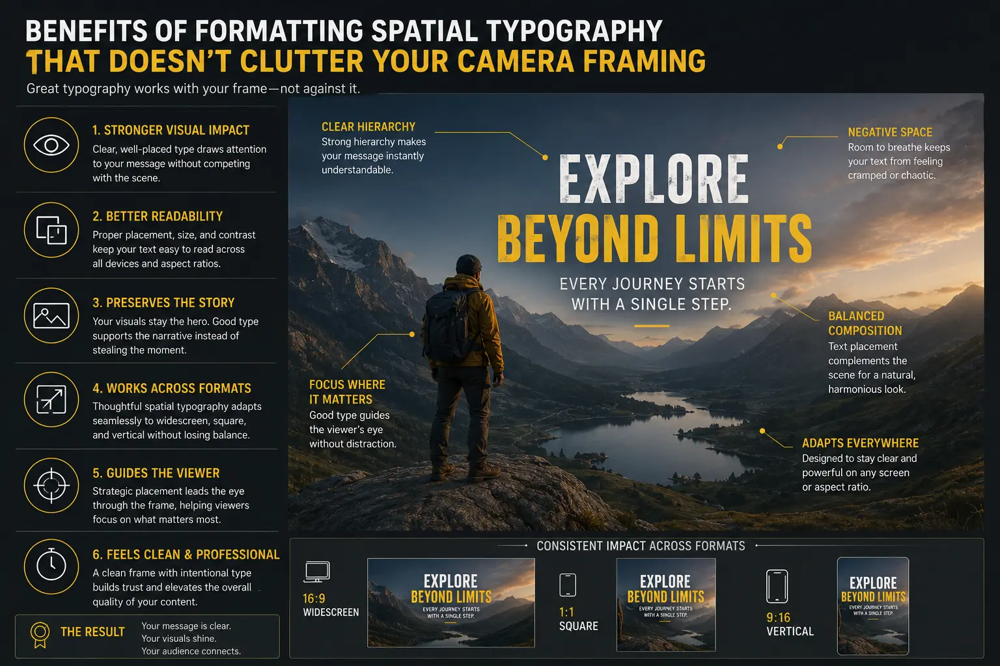
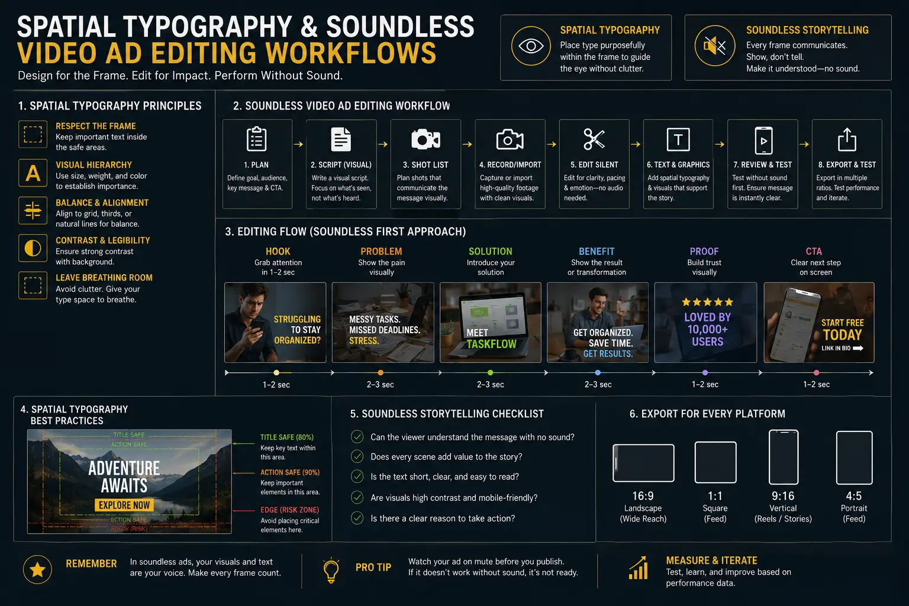

Formatting Spatial Typography that Doesn't Clutter Your Camera Framing
The Tension Between On-Screen Captions and Camera Composition
In contemporary social media video advertising, the overwhelming majority of users browse feeds on Instagram Reels, TikTok, YouTube Shorts, and LinkedIn with audio muted by default. Statistics show that over 85% of mobile video views occur without sound, making high-impact text presentation essential to retention. However, as brand video teams race to add kinetic captions, floating callouts, and animated titles to retain silent scrollers, a glaring technical issue has emerged: screen clutter. Poorly placed subtitles obscure speaker expressions, hide product logos, collide with platform user interfaces, and compromise cinematic framing.
Solving this dilemma requires a dedicated architectural approach to on-screen text. By implementing rigorous Spatial Typography Rules, video editors and graphic designers can integrate animated typography seamlessly into the physical camera framing. Rather than slapping static captions over arbitrary screen real estate, master editors analyze shot composition, lighting contrast, and depth planes to achieve balanced, elegant typography. Mastering Muted Feed Subtitle Placement ensures that every word enhances message comprehension without degrading visual aesthetics.
High-performing video ad campaigns leverage Creative Advertising Text Motion not merely as an accessibility feature, but as a primary driver of visual engagement. By treating typography as a structural component of the video composition, brands turn muted feeds into high-converting storytelling channels. Achieving this balance depends on strict adherence to camera framing boundaries, intelligent negative space allocation, and modern soundless video ad editing workflows.
Core Fundamentals of Spatial Typography in Video Editing
Spatial typography is the practice of treating written text as a physical element existing within the three-dimensional space of a video frame. Unlike traditional broadcast lower-thirds or static subtitle strips, spatial text respects the depth, movement, and geometry of the filmed environment. Implementing effective Spatial Typography Rules starts during shot design and carries through to post-production motion tracking:
- Negative Space Allocation: Directors and cinematographers must frame shots with intentional headroom, side margins, or clear background walls designed specifically to house text. When camera framing provides clean negative space, on-screen copy resides comfortably without visually competing with the main subject.
- 3D Spatial Tracking and Occlusion: Advanced motion graphics editors use camera tracking to anchor text to physical set elements—such as a wall behind the presenter, a tabletop, or a floating plane adjacent to a product. Using depth masking (rotoscoping), text can pass behind subjects, reinforcing 3D spatial depth while preventing subject overlap.
- Hierarchical Visual Weight: Typography scale and weight must adjust based on subject prominence. Primary messaging should leverage high-contrast, bold sans-serif type, while supporting subtitles maintain a secondary, less intrusive scale.
- Dynamic Motion Alignment: Integrating dynamic typography placement for social means matching text movement to camera motion. If the camera pans right, text elements smoothly track across the screen in sync with the scene physics, avoiding mechanical visual dissonance.
Adhering to these foundational principles transforms cluttered subtitles into refined motion graphics. When editors establish a clear subtitle layout design, viewers naturally read captions while absorbing the core visual narrative simultaneously.
Navigating On-Screen Text Safety Zones Across Vertical Social Feeds
One of the most frequent errors in mobile video editing is ignoring platform user interface overlays. Modern short-form video platforms—including Instagram Reels, TikTok, YouTube Shorts, and Facebook Watch—place persistent buttons, user handles, captions, sound titles, and engagement icons over the edges of vertical 9:16 videos. Placing captions too close to the screen edge results in text being cut off or rendered completely unreadable beneath opaque UI controls.
To guarantee 100% legibility across every screen size, editors must strictly observe On-screen text safety zones. In vertical 9:16 video production, the active safety zone is confined to the central 60% of the viewport. Specifically:
- Top Margin Buffer: Reserve the top 15% of the vertical height to avoid header bars, search buttons, and back arrows.
- Bottom Margin Buffer: Reserve the bottom 25% of the frame to prevent subtitles from overlapping with username handles, audio tracks, and CTA buttons.
- Right Rail Margin Buffer: Keep text clear of the rightmost 15% of the screen where like buttons, comment triggers, bookmark icons, and profile avatars sit.
- Left Margin Alignment: Maintain a 5-10% left padding margin to keep text from touching physical screen bezels.
By configuring editing timelines with precise On-screen text safety zones guides, post-production teams guarantee seamless Muted Feed Subtitle Placement. This structural discipline ensures that soundless video ad editing produces polished, broadcast-grade assets for multi-platform distribution.
Kinetic Caption Styling Guidelines for Maximum Readability
Readability on mobile screens demands fast comprehension without visual fatigue. Because short-form video scrollers process information in fractions of a second, captions must be styled for instant legibility. Adhering to proven kinetic caption styling guidelines allows video creators to maintain fast pacing while eliminating cognitive friction:
- Typography Selection and Contrast: Use clean, bold geometric sans-serif typefaces (such as Montserrat, Inter, or Impact). Avoid overly decorative script or ultra-thin serif fonts that disintegrate on small mobile screens. Pair light text with subtle semi-transparent dark background pills or crisp 3-4px stroke outlines for guaranteed contrast over dynamic backgrounds.
- Short Word Burst Cadence: Limit caption bursts to 1-3 words per display screen. Displaying entire sentences forces viewers to read static blocks of text, pulling focus away from the video action. Short, rhythmic word bursts mirror natural spoken cadence and create visually dynamic beats.
- Selective Keyword Highlighting: Apply contrasting highlight colors (such as vibrant yellow, green, or cyan) strictly to high-impact action verbs and key value propositions. This technique guides the viewer's eye to core selling points instantly.
- Controlled Pop-In Animations: Utilize subtle scale pop-ins or smooth slide transitions. Avoid chaotic, overly aggressive text animations that cause visual disorientation.
Integrating these kinetic caption styling guidelines elevates basic speech-to-text outputs into captivating Creative Advertising Text Motion. Proper styling ensures captions complement the video rather than overwhelming the speaker's face or product framing.
Maximised View Retention
Applying strict Spatial Typography Rules keeps silent scrollers engaged longer, dramatically reducing early video drop-off rates on social feeds.
Zero Interface Interference
Respecting On-screen text safety zones prevents captions from being obscured by platform UI overlays, guaranteeing 100% legibility.
Cinematic Framing Protection
Thoughtful subtitle layout design preserves subject headroom and negative space, keeping camera composition clean and professional.
Enhanced Brand Authority
Executing Creative Advertising Text Motion with custom kinetic styling projects premium agency quality across all mobile ad placements.

Advanced Techniques in Dynamic Typography Placement for Social
Beyond basic captions, professional video producers employ advanced dynamic typography placement for social to elevate commercial video performance. By integrating 3D visual effects into post-production pipelines, motion designers bridge the gap between camera footage and kinetic graphics:
Rotoscoped Depth Masking: By separating foreground presenters or products from background plates using AI rotoscoping tools, editors can place bold title text directly behind the speaker. This spatial layering trick retains full subject visibility while inserting high-impact headline copy into unused background negative space.
3D Object Tracking Callouts: In product showcase videos, attaching spatial callouts directly to moving products using point tracking establishes immediate visual context. As a handheld product tilts or rotates, callout typography moves in perfect sync, creating an interactive augmented-reality feel.
Adaptive Background Color Sampling: Advanced dynamic text tools sample colors from the surrounding video frame in real time, automatically adjusting text fill and stroke colors to maintain ideal contrast ratios regardless of scene lighting shifts.
Combining these sophisticated techniques refines subtitle layout design, turning routine transcripts into active visual storytelling components that capture attention on muted mobile feeds.
Spatial Tracking Tools
- Adobe After Effects 3D Camera Tracker for spatial pinning.
- DaVinci Resolve Fusion for rotoscoping and depth masking.
- CapCut Pro for automated Muted Feed Subtitle Placement.
- Descript for speech-synced kinetic text generation.
Safety & Layout Parameters
- Maintain 60% central viewport safety zone boundaries.
- Use high-contrast sans-serif typefaces (Montserrat, Inter).
- Cap word bursts to 1-3 words per display block.
- Apply 3-4px stroke or semi-transparent background pills.
Production Quality Checklist
- Verify zero overlap with platform handles and UI buttons.
- Ensure presenter faces and product logos remain unobscured.
- Sync text animation beats to audio cadence and video cuts.
- Audit legibility across multiple mobile device aspect ratios.

Structuring Soundless Video Ad Workflows for B2B & E-Commerce
Building high-converting muted video ads requires a structured, end-to-end post-production pipeline. Brands that consistently achieve high view-through rates combine careful pre-production planning with disciplined editing execution:
1. Pre-Production Framing Blueprint: Before shooting, directors establish shot lists that account for spatial text placement. Instructing presenters to stand slightly off-center or framing product shots with intentional negative space provides dedicated visual real estate for titles and captions during edit assembly.
2. Automated Speech Transcription & Editing: Editors generate initial subtitle tracks using AI speech recognition, adjusting timestamps to match natural speech pauses. Cleaning up filler words ensures text bursts remain tight and punchy.
3. Applying Kinetic Styling & Safety Overlays: Using timeline overlays for On-screen text safety zones, motion designers apply kinetic caption styling guidelines. Fonts, stroke widths, highlight colors, and background pills are standardized across all video assets to maintain brand consistency.
4. Multi-Format Export Auditing: Video assets are rendered and previewed across target mobile platforms (Instagram Reels, TikTok, YouTube Shorts, LinkedIn). Quality control teams verify that Muted Feed Subtitle Placement remains perfectly aligned and legible on diverse screen ratios.
Following this systematic workflow allows agencies and in-house creative teams to scale soundless video ad editing efficiently without compromising visual quality or brand integrity.
Conclusion: Unlocking High-Retention Muted Video Ads
Mastering spatial typography is no longer optional for digital marketers—it is an essential discipline for driving paid social performance. By harmonizing text placement with camera framing, respecting platform safety zones, and applying kinetic styling standards, brands create clutter-free video assets that command attention on muted feeds.
At The PhD Ads in Madurai, we specialize in high-converting video production strategies tailored for modern social algorithms. Our creative team combines expert camera direction, Creative Advertising Text Motion, precise Muted Feed Subtitle Placement, and Spatial Typography Rules to deliver broadcast-grade video ad campaigns that scale business growth.
Key Topics
Ready to Master Clutter-Free Spatial Typography for Social Videos?
At The PhD Ads in Madurai, we help brands design, edit, and optimize high-retention video ads using spatial typography, kinetic text motion, and precise safe-zone formatting. Partner with our creative team to scale your social video performance.
Email: team@e2o.in